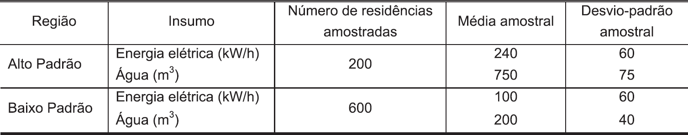

A prefeitura de uma cidade quer conhecer o padrão de consumo mensal de energia elétrica e de
água de duas de suas regiões: uma delas com residências de alto padrão de construção e outra
com residências de baixo padrão de construção.
O Estatístico responsável pelo estudo solicitou, junto às companhias de distribuição de energia
elétrica e de água, os valores para o consumo mensal de energia elétrica e de água das
residências de uma amostra aleatória de cada região. Por questões de sigilo, as companhias
distribuidoras forneceram um resumo dos dados solicitados, a saber, média e desvio-padrão do
consumo nas residências amostradas, apresentados na tabela a seguir.
Tabela com valores de tamanho de amostra, média e desvio-padrão das variáveis estudadas

Com base nas Informações dessa tabela, o Estatístico conclui que
-
as residências de alto padrão apresentam variabilidade relativa do consumo de água maior do que
aquelas de baixo padrão.
-
as residências de alto padrão e de baixo padrão apresentam variabilidades relativas similares quanto
ao consumo de energia elétrica.
-
entre as residências de baixo padrão, o consumo de água apresenta variabilidade relativa maior do
que a do consumo de energia elétrica.
-
entre as residências de baixo padrão, o consumo de água apresenta variabilidade relativa similar à
do consumo de energia elétrica.
-
entre as residências de alto padrão, o consumo de água apresenta variabilidade relativa menor do
que a variabilidade relativa do consumo de energia elétrica.